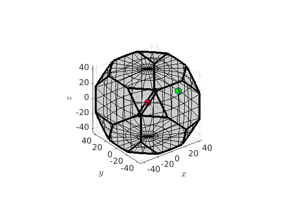
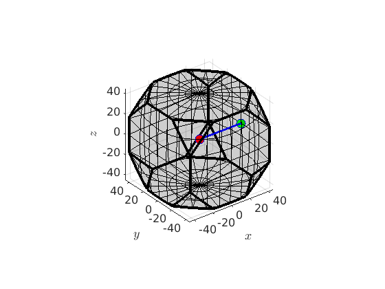
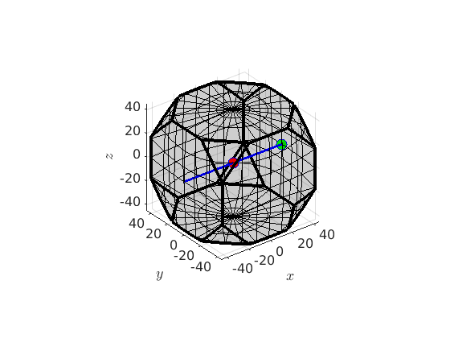
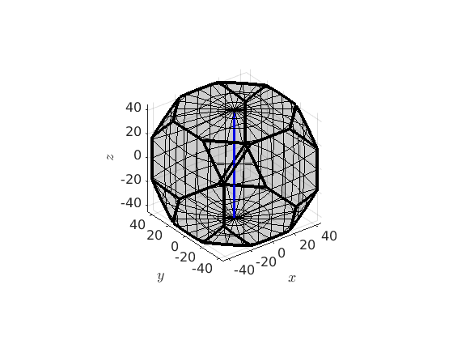
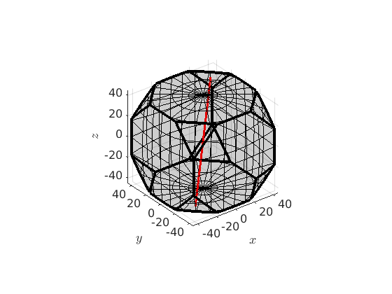
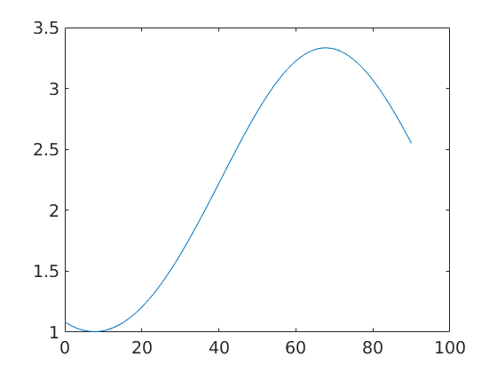

This sections describes the class fibre and gives an overview how to work with fibres in MTEX.
Open in Editor
Defining a Fibre
A fibre in orientation space can be seen as a line connecting two orientations.
% define a crystal symmetry cs = crystalSymmetry('432') ss = specimenSymmetry('222') % and two orientations ori1 = orientation.cube(cs,ss); ori2 = orientation.goss(cs,ss); % the connecting fibre f = fibre(ori1,ori2) % lets plot the two orientations together with the fibre plot(ori1,'MarkerSize',10,'MarkerFaceColor','r','MarkerEdgeColor','k') hold on plot(ori2,'MarkerSize',10,'MarkerFaceColor','b','MarkerEdgeColor','k') plot(f,'linewidth',3,'linecolor','g') hold off
cs = crystalSymmetry symmetry: 432 a, b, c : 1, 1, 1 ss = orthorhombic specimenSymmetry f = fibre size: 1 x 1 crystal symmetry: 432 specimen symmetry: 222 o1: (0°,0°,0°) o2: (0°,45°,0°)

%Since, the orientation space has no boundary a full fibre % is best thought of as a circle that passes trough two fixed orientations.
SUB: by two orientations
% define a crystal symmetry cs = crystalSymmetry('432') % the corresponding fundamental region oR = fundamentalRegion(cs) % two orientations ori1 = orientation.cube(cs); ori2 = orientation.goss(cs); % visualize the orientation region as well as the two orientations plot(oR) hold on plot(ori1,'MarkerFaceColor','r','MarkerSize',10) plot(ori2,'MarkerFaceColor','g','MarkerSize',10) hold off
cs = crystalSymmetry symmetry: 432 a, b, c : 1, 1, 1 oR = orientationRegion crystal symmetry: 432 max angle: 62.7994° face normales: 14 vertices: 24
Now we can define the partial fibre connecting the cube orientation with the goss orientation by
f = fibre(ori1,ori2) hold on plot(f,'linecolor','b','linewidth',2) hold off
f = fibre size: 1 x 1 crystal symmetry: 432 o1: (0°,0°,0°) o2: (0°,45°,0°)
In order to define the full fibre us the option full
f = fibre(ori1,ori2,'full') hold on plot(f,'linecolor','b','linewidth',2,'project2FundamentalRegion') hold off
f = fibre size: 1 x 1 crystal symmetry: 432 o1: (0°,0°,0°) h: (100)
SUB: by two directions
Alternatively, a fibre can also be defined by a crystal direction and a specimen direction. In this case it consists of all orientations that alignes the crystal direction parallel to the specimen direction. As an example we can define the fibre of all orientations such that the c-axis (001) is parallel to the z-axis by
f = fibre(Miller(0,0,1,cs),vector3d.Z) plot(oR) hold on plot(f,'linecolor','b','linewidth',2,'project2FundamentalRegion') hold off
f = fibre size: 1 x 1 crystal symmetry: 432 o1: (0°,0°,0°) h: (001)
If the second argument is a of type Miller as well the fibre defines a set of misorientations which have one direcetion aligned.
SUB: by one orientation and an orientation gradient
Finally, a fibre can be defined by an initial orientation ori1 and a direction h, i.e., all orientations of this fibre satisfy
ori = ori1 * rot(h,omega)
ori * h = ori1 * h
The following code defines a fibre that passes through the cube orientation and rotates about the 111 axis.
f = fibre(ori1,Miller(1,1,1,cs)) plot(oR) hold on plot(f,'linecolor','r','linewidth',2,'project2FundamentalRegion') hold off
f = fibre size: 1 x 1 crystal symmetry: 432 o1: (0°,0°,0°) h: (111)
SUB: predefined fibres
There exist a list of predefined fibres in MTEX which include alpha-, beta-, gamma-, epsilon-, eta- and tau fibre. Those can be defined by
beta = fibre.beta(cs,'full');
Note, that it is now straight forward to define a corresponding fibre ODF by
odf = fibreODF(beta,'halfwidth',10*degree) % and plot it in 3d plot3d(odf) % this adds the fibre to the plots hold on plot(beta.symmetrise,'lineColor','b','linewidth',2) hold off
odf = ODF
crystal symmetry : 432
specimen symmetry: 1
Fibre symmetric portion:
kernel: de la Vallee Poussin, halfwidth 10°
fibre: (---) - -0.23141,-0.23141,0.94494
weight: 1

Visualize an ODF along a fibre
plot(odf,fibre.gamma(cs))
Compute volume of fibre portions
100 * volume(odf,beta,10*degree)
ans = 54.3540
Complete Function list
| angle | fibre to orientation or fibre to fibre |
| cat | implement cat for fibre |
| display | standard output |
| end | overloaded end function |
| eq | ? sS1 == sS2 |
| fibre | is a class representing a fibre in orientation space. Examples |
| horzcat | overloads [v1,v2,v3..] |
| isempty | overloads isempty |
| length | overloads length |
| ne | ? sS1 ~= sS2 |
| orientation | generate a list of orientation out of a fibre |
| plot | a fibre |
| plotIPDF | plot orientations into inverse pole figures |
| plotPDF | plot a fibre into pole figures |
| rotation | generate a list of orientation out of a fibre |
| size | overloads size |
| subSet | subindex vector3d |
| subsref | overloads subsref |
| symmetrise | all crystallographically equivalent fibres |
| transpose | list of slipSystem |
| vertcat | overloads [v1,v2,v3..] |